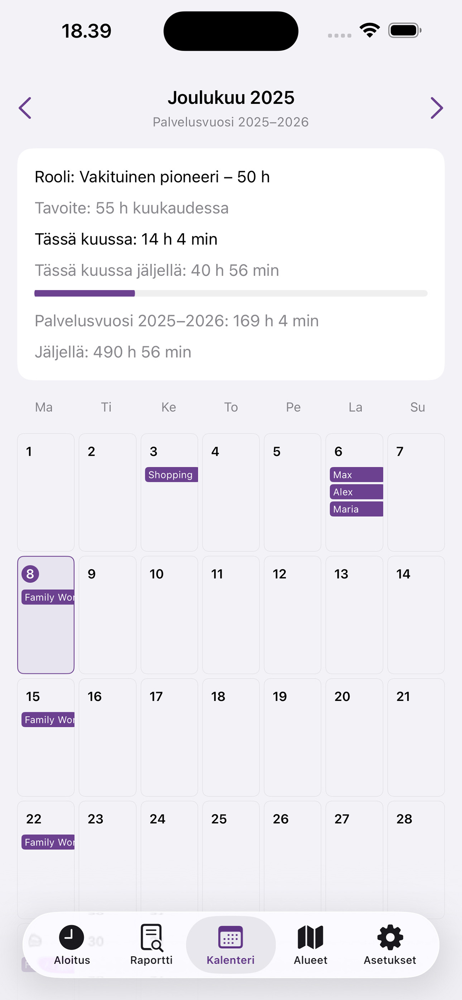
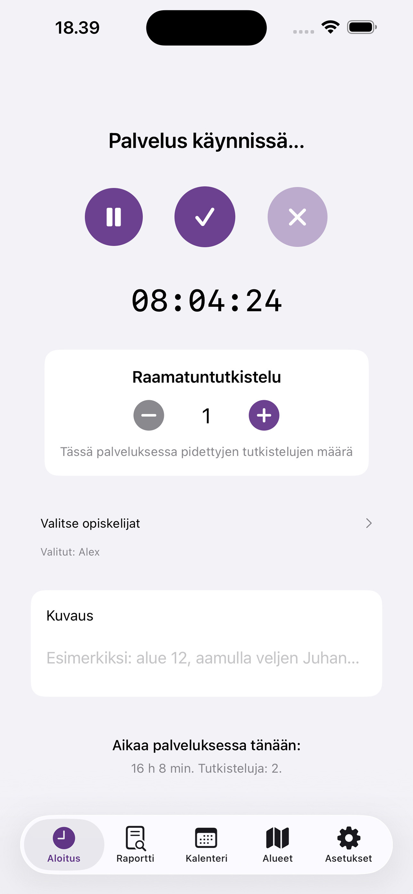
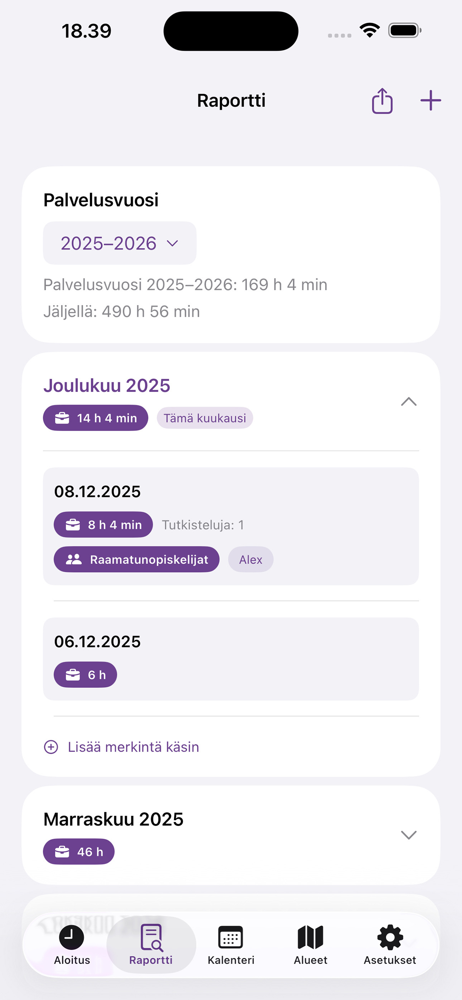
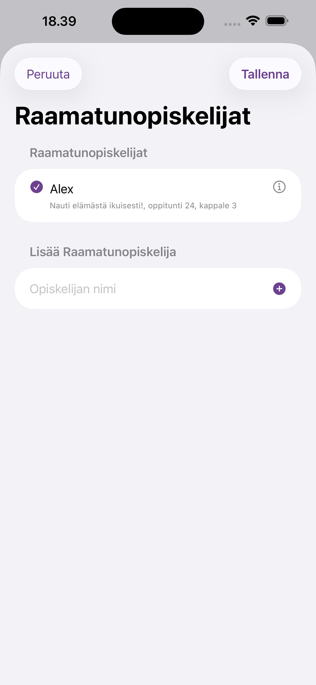
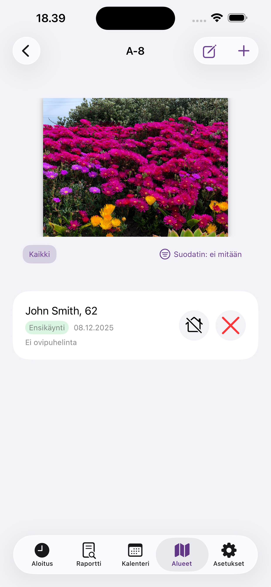
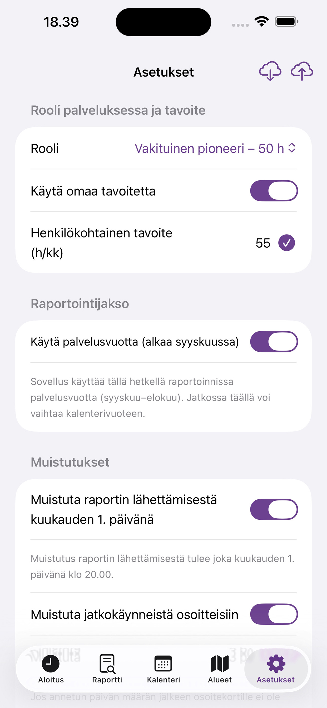
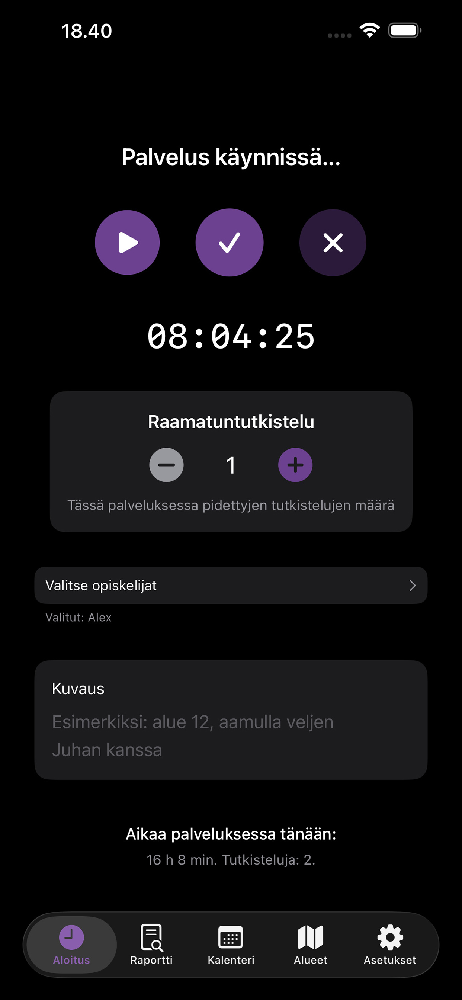
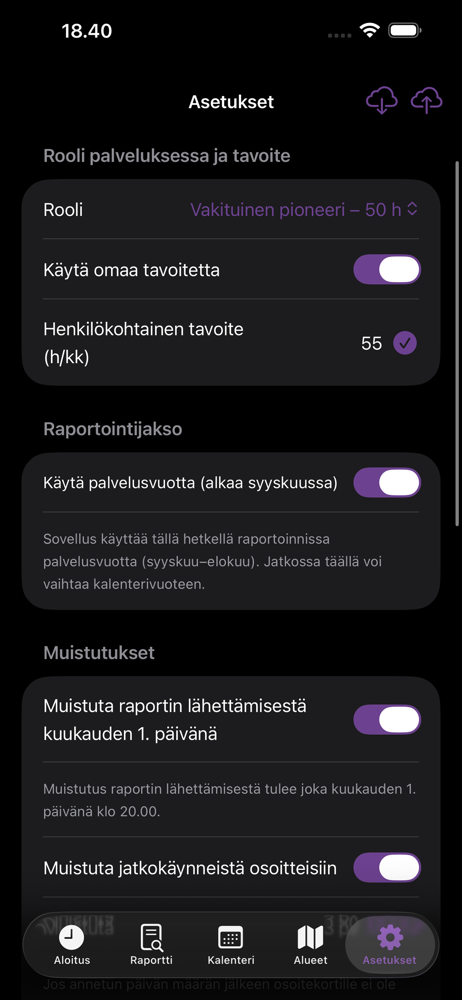

Kattava apuväline kenttäpalvelukseen ja tienraivaukseen
JW Ministry on Jehovan todistajien kenttäpalvelukseen suunniteltu iPhone- ja iPad-sovellus: ajastin Live Activities -tuella, raamattukurssien seuranta, palvelusvuoden raportit, tienraivaajan tuntitavoitteet ja aluekortit.



Tutustu JW Ministryn jokaiseen näkymään
Aidot suomenkieliset näyttökuvat — kenttäpalvelusajastimesta ja raamattukursseista tienraivaajan kalenteriin, aluekortteihin ja tummaan OLED-tilaan.







Kaikki mitä tarvitset järjestelmälliseen kenttäpalvelukseen
Suunniteltu julistajille, osa-aikaisille, vakituisille ja erikoistienraivaajille.
Älykäs ajastin, Widgetit & Dynamic Island
Käynnistä ajastin sovelluksesta, Koti-valikon widgetistä tai lukitusnäytöltä. Aktiivinen aika näkyy koko ajan Dynamic Islandissa.
Raamattukurssit & Julkaisujen edistyminen
Yhdistä raamattukurssit suoraan raporttimerkintöihin. Seuraa jokaisen oppilaan oppijaksoa ”Onnellinen elämä nyt ja ikuisesti” -kirjassa.
Palvelustehtävät & Omat tuntitavoitteet
Tukee Julistajaa, Osa-aikaista tienraivaajaa (15 tai 30 tuntia), Vakituista tienraivaajaa (50 tuntia), Erikoistienraivaajaa (90 / 100 tuntia) sekä omaa tavoitetta.
Palvelusvuosi (syys–elo) & Kalenteri
Suunnittele kenttäpalvelustapaamiset ja perheen palvontailta. Vertaa suunniteltuja ja toteutuneita tunteja ja pyyhkäise suunnitelma suoraan raporttiin.
Alueet, Kerrostalot & Uusintakäyntimuistutukset
Luo aluekortteja karttakuvilla, 10 värillä ja huoneistogeneraattorilla rappujen ja kerrosten mukaan. Hae osoitteella tai nimellä.
100 % Paikallinen tietosuoja & iCloud-varmuuskopiot
Ei rekisteröitymistä eikä ulkoisia palvelimia. Kaikki tiedot ja kuvat pysyvät paikallisesti iPhonessasi tai iPadissasi.
Uutta versiossa 1.8
- Suunniteltujen kuukausituntien automaattinen summa Kalenterissa ja kaksinkertainen edistymispalkki (Suunniteltu vs. Toteutunut).
- Muunna Kalenteriin suunniteltu palvelus suoraan raporttimerkinnäksi yhdellä pyyhkäisyllä.
- Välitön haku osoitteen tai asukkaan nimen perusteella kaikilta alueilta sekä 10 väriteemaa aluekorteille.
- Tuki tulevalle palvelusvuodelle (2026–2027) Raportti-välilehdellä.
- Täysi optimointi uusimmille iOS- ja iPadOS-versioille sekä parannettu varmuuskopioiden suojaus.
Miksi julistajat ja tienraivaajat valitsevat JW Ministryn
Ominaisuuksien vertailu kenttäpalvelusraporttiin, tienraivaussuunnitelmaan ja aluekortteihin.
| Ominaisuus | Paperimuistiinpanot | Vanhat sovellukset | JW Ministry 1.8 |
|---|---|---|---|
| Live-ajastin lukitusnäytöllä & Dynamic Islandissa | Ei | Ei | Kyllä (Live Activities) |
| Tienraivaajan tuntien (15, 30, 50 t) & palvelusvuoden (600 t) laskenta | Käsin | Osittain | Automaattinen + Oma tavoite |
| Suunniteltu vs. Toteutunut Kalenterissa & pyyhkäisy Raporttiin | Ei | Ei | Yhdellä pyyhkäisyllä |
| Kerrostalogeneraattori + Aluekuvat & 10 väriä | Paperilaput | Vain teksti | Kuvalliset kortit + Haku |
| Uusintakäyntimuistutukset & raporttimuistutus kuun 1. päivänä | Ei | Perustaso | Älykkäät iOS-ilmoitukset |
| 100 % paikallinen tietosuoja & täysi iCloud Drive -varmuuskopio kuvineen | Helppo kadottaa | Virheitä puhelinta vaihtaessa | 100 % Offline & turvallinen |
| Tuki uusimmalle iOS:lle, iPadille, OLED-tilalle & yli 35 kielelle | — | Ei päivityksiä | Moderni SwiftUI-ulkoasu |
Suunniteltu Jehovan todistajien kenttäpalvelukseen ja tienraivaukseen
Miten JW Ministry auttaa julistajia ja tienraivaajia koko palvelusvuoden ajan.
Vakituiset ja erikoistienraivaajat (50, 90 & 100 tuntia / Palvelusvuosi 600 tuntia)
Seuraa vaivattomasti 50 tunnin kuukausitavoitetta ja 600 tunnin vuositavoitetta syyskuusta elokuuhun. Aseta oma tavoite (esim. 55 tuntia) ja vertaa suunniteltuja tunteja toteutuneisiin Kalenterissa.
- Automaattinen saldo 50 t/kk ja 600 t palvelusvuodessa
- Oma kuukausittainen tuntitavoite (esim. 55 tuntia)
- Kaksoispalkki: suunnitellut vs. raportoidut tunnit
Osa-aikaiset tienraivaajat (15 & 30 tuntia) ja seurakunnan julistajat
Erikoiskampanjoiden tai muistojuhlan aikana voit vaihtaa Osa-aikaiseksi tienraivaajaksi (15 tai 30 tuntia) yhdellä napautuksella. Muistutus kuun 1. päivänä klo 20.00 auttaa muistamaan raportin.
- Nopea vaihto 15 tai 30 tunnin osa-aikaiseen tavoitteeseen
- Jaa kuukausiraportti yhdellä napautuksella
- Automaattinen muistutus kuun 1. päivänä klo 20.00
Talosta taloon -alueet, kerrostalot & uusintakäynnit
Luo digitaalisia aluekortteja karttakuvalla, 10 värillä ja huoneistogeneraattorilla. Merkitse ”Ei kotona” ja hae nopeasti nimellä tai kadulla.
- Huoneistogeneraattori rapun ja kerroksen mukaan
- Aluekarttakuvat, 10 väriä ja nopea haku nimellä tai osoitteella
- Automaattiset muistutukset uusintakäynneistä
Raamattukurssien seuranta & moderni vaihtoehto ServicePlanner / MyTime -sovelluksille
Tallenna jokaisen oppilaan nykyinen oppijakso ”Onnellinen elämä nyt ja ikuisesti” -kirjassa. Suunniteltu iPhonelle ja iPadille.
- Seuraa oppijaksoja ”Onnellinen elämä nyt ja ikuisesti” -kirjassa
- Widgetit, Dynamic Island ja tumma OLED-tila
- Moderni korvaaja ServicePlanner- ja MyTime-sovelluksille
Julistajien ja tienraivaajien kokemuksia
Mitä veljet ja sisaret kertovat JW Ministryn käytöstä palveluksessa.
“Suunniteltujen tuntien näkeminen Kalenterissa toteutuneiden tuntien rinnalla tekee 50 tunnin aikataulussa pysymisestä todella helppoa.”
“Lukitusnäytön ajastin ja suunnitelman pyyhkäisy Kalenterista suoraan raporttiin toimivat loistavasti.”
“Kerrostalogeneraattori ja nimihaku aluekorteissa ovat korvanneet kaikki paperilappuni.”
Käännetty yli 35 kielelle
Sovellus, widgetit ja ilmoitukset mukautuvat automaattisesti iPhonen tai iPadin kieleen:
Tue JW Ministryn kehitystä
JW Ministry on täysin ilmainen eikä sisällä tilauksia. Jos sovellus auttaa sinua palveluksessa, voit tukea tulevia iOS-päivityksiä ja vuotuista Apple Developer -lisenssiä:
Tue kortilla (Maailmanlaajuisesti)
Nopea tuki Boostyn tai Patreonin kautta:
Suora kryptosiirto (0 % kulu)
Suoraan kehittäjän lompakkoon:
TQQxYhThQGngj887Lvq9TnKtyyYMcUDFNw
UQBNBroTUyMG0YqgiHGXwVKO_rKe5d2y7gXqvICREjBwuKYk
Usein kysytyt kysymykset (UKK)
Miten JW Ministry täydentää JW Library -sovellusta?
Kun JW Librarya käytetään Raamatun, julkaisujen lukemiseen ja kokouksiin, JW Ministry on tehty henkilökohtaisen kenttäpalveluksesi kirjaamiseen: tuntien ajastamiseen, tienraivaussuunnitelmaan (15, 30, 50 t), aluemerkintöihin ja raamattukursseihin.
Missä raporttini ja aluemerkintäni säilytetään?
Yksinomaan paikallisesti omassa iPhonessasi tai iPadissasi. Mitään tietoja ei lähetetä ulkoisille palvelimille.
Miten siirrän tietoni uuteen iPhoneen?
Napauta Asetukset-välilehden oikeasta yläkulmasta pilvikuvaketta viedäksesi täyden varmuuskopion iCloud Driveen ja palauta se uudella laitteella.
Toimiiko sovellus kenttäpalveluksessa ilman internetiä?
Kyllä, sovellus toimii 100 % offline-tilassa ilman mobiilidataa tai Wi-Fi-yhteyttä.